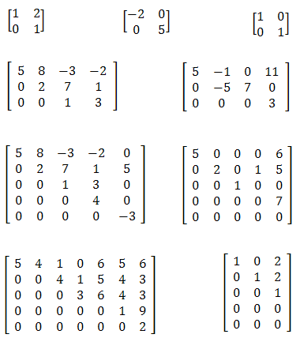
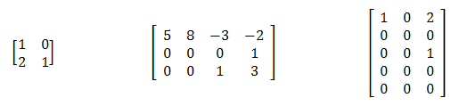
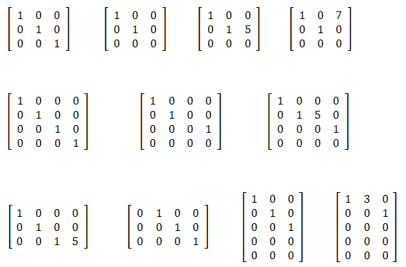
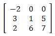
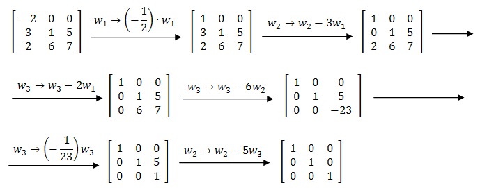
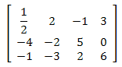
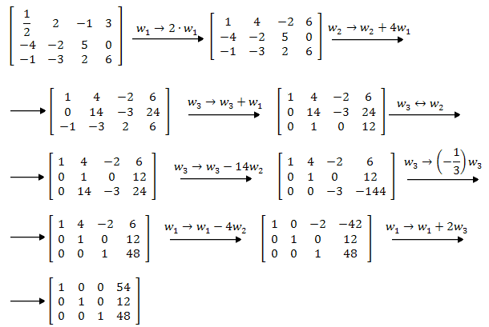

Mówimy, że macierz \(A\in M_{m\times n}(\mathbb{R} )\) jest w
postaci
schodkowej, jeżeli \(A\) spełnia warunki:
- każdy wiersz zerowy (składający się z samych zer) znajduje się poniżej
każdego wiersza niezerowego,
- w każdym wierszu pierwszy (licząc od lewej) niezerowy wyraz znajduje się w
kolumnie stojącej na prawo od pierwszego niezerowego wyrazu wiersza poprzedniego.
Mówiąc intuicyjnie - macierz jest w postaci schodkowej, jeżeli w kolejnych
wierszach występuje na początku coraz więcej zer (kolejne wiersze macierzy przypominają schodki).
Przykładowy macierzy zapisanych w postaci schodkowej: 
Przykłady macierzy które nie są zapisane w postaci schodkowej: 
Definicja
Mówimy, że macierz jest w
zredukowanej postaci schodkowej, jeżeli spełnia
warunki:
- jest w postaci schodkowej,
- w każdym wierszu pierwszy niezerowy wyraz jest równy \(1\), a ponadto inne
wyrazy w jego kolumnie są zerami.
Przykładowy macierzy zapisanych w zredukowanej postaci schodkowej: 
Powyższy fakt jest niezwykle ważny, ponieważ dzięki niemu możemy rozwiązywać
dowolnie skomplikowane układy równań liniowych. Wystarczy sprowadzić do postaci schodkowej
zredukowanej macierz odpowiadającą takiemu układowi, a następnie odczytać z niej rozwiązanie.
Już w poprzednim rozdziale, podczas wykonywania operacji elementarnych,
sprowadziliśmy macierz do postaci schodkowej zredukowanej. Wszystkie rachunki są przedstawione w
tym przykładzie.
Poniżej podam kolejne przykłady na sprowadzanie macierzy do postaci schodkowej
zredukowanej. Operacje elementarne na wierszach będziemy oznaczali tak jak we
wspomnianym przykładzie.
Sprowadź podaną macierz do postaci schodkowej zredukowanej. 

Sprowadź podaną macierz do postaci schodkowej zredukowanej.

